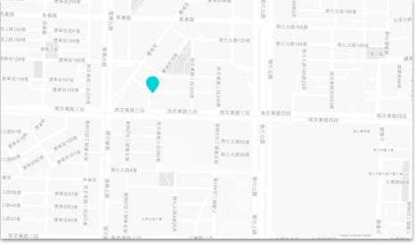

#CivilTechFest
Civic Tech is a new kind of civic engagement that uses technology and has become a key building block for democracies in the digital age.
“Civic Tech Fest” is Asia’s first ever civic technology festival and conference, featuring a series of forums, workshops, roundtables, conferences and hackathons related to open data and open government. Civic Tech Fest will also host “TICTeC@Taipei: Impacts of Civic Technology Conference,” organized by mySociety.
We will invite a number of experts, academics, hackers and members of governments to discuss and collaborate, and most importantly, have fun together!
- About #CivilTechFest
2017 世界公民科技週，主軸將由開放文化基金會邀請英國知名公民科技組織 mySociety，於2017 年 9 月，與 WCIT 共同舉辦「公民科技動能推升研討會 The Impacts of Civic Technology Conference」。此研討會與 g0v 零時政府年會有所區隔，較具學術性，接軌公民科技與學界研究新領域。並於研討會前後邀請國際與亞洲相關組織，舉辦其它活動與國際組織會議，包括 Data Bootcamp for NGOs 、開放政府研究報告發布等議程，開啟建立世界民主科技網絡的相關討論，期待透過串連世界各地的相關專家、團體，在台灣逐漸打造全球公民科技之重鎮。
Civic Tech Fest 2017 is a week-long collection of events coordinated by the Open Culture Foundation alongside the WCIT in September 2017. The main highlight for the Civic Tech Fest is “TICTeC@Taipei: The Impacts of Civic Technology Conference”, co-organized by mySociety.
We invite regional and international groups to create events and activities over the span of the week. In addition to TICTeC@Taipei, featured events include data bootcamp for NGOs, presentation sessions on open government research, and g0v.tw hackathon. We hope through the course of our discussion, we can lay the groundwork for a global civic tech network, foster more collaborate in global civic tech movement.
+ About TICTeC@Taipei
TICTeC（The Impacts of Civic Technology Conference）為一年一度關注公民科技影響力的國際研討會，由英國歷史悠久的公民科技組織 mySociety 於 2015 年發起。該研討會旨於分析與評估公民科技的發展，並著重研究公民科技在不同社會環境與政治脈絡下的影響力與成效。 mySociety 在推動 TICTeC 前，曾於 2014 在智利舉辦 PoplusCon，也是最早開始串連世界各的公民科技社群、專案交流的大型網絡之一。
TICTeC (The Impacts of Civic Technology Conference) is an annual international conference that focuses on the impact of civic tech, and was first established in 2015 by the influential UK group “mySociety”. This conference aims to analyze and assess the development of civic tech, and focuses on studying the impact and effectiveness of civic tech under different social environments and political contexts.
prior to TICTeC, mySociety organized PoplusCon in Chile in 2014, which was one of the first large-scale networking events that gathered the global civic tech scene together toward collaboration.
有鑑於目前公民科技的發展，仍然經常是各地方單打獨鬥，因此，TICTeC 希望透過研討會的形式，將國際上關心公民科技的行動者、評論家、學術界與投資者匯集一堂，深入分析線上審議與數位民主等等公民科技的影響力與普及度，作為未來發展的重要參考。有別於其它著重技術的研討會，TICTeC 更具有學術性的色彩，強調線上與線下、科技與社會的串連。在科技發展日新月異，而社會與政治的變動卻相對緩慢之下，TICTeC 為公民科技的倡議者與評論家搭建橋樑，共同激盪出對開放政府、民主深化、公民參與等面向上，具有影響力的解決方案。
Because the development of civic tech is often times not through a global context, but through individual groups working alone, TICTeC looks to bring together an international group of civic tech practitioners, critics, academics and investors.
Over the course of the conference, TICTeC looks to provide in-depth analysis regarding online participation tools, digital democracy tools, as well as their influence and popularity. Their findings act as important reference points for future development of the field. In comparison to other tech focused conferences, TICTeC has a more research and academic focus, and emphasizes the connection between online/offline tech with society.
As technology develops faster each day, and as society and politics develop comparitively slower, TICTeC is a way for civic tech advocates and critics to build a bridge for open government, democratic deepening, and civic participation to march forward.
此次 TICTeC @ Taipei 是「公民科技影響力論壇(XXX: please use the same term)」首度於亞洲舉辦，預計邀請國際來自學術界、商業界、政治領域、NGOs 及教育機構的參與者，共同討論、發表研究並建立公民科技的網絡。
TICTeC@Taipei is the first ever conference about the influence of civic tech to be held in Asia. We’ve invited members of academia, business, politics, NGOs, education to participate, and discuss their research. We hope through this event, we can build a global network of civic tech enthusiasts.
+ About OCF
The Open Culture Foundation (OCF) is dedicated to promoting a number of open culture campaigns, including open source, open standards, open hardware, open data, open systems, and other related “open” concepts. You can donate to us online at: http://ocf.tw/donate/
+ About mySociety
blah blah blah
Keynote Speakers

Rebecca Rumbul
Head of Research, mySociety

Nanjira Sambuli
Digital Equality Advocacy Manager, World Wide Web Foundation

Masashi Crete-Nishihata
Research Manager, The Citizen Lab

Stephen King
Partner, Omidyar Network
Audrey Tang
Digital Minister without portfolio, Taiwan
Chia-liang Kao
Co-Founder, g0v.tw & Board Member, Open Culture Foundation

Michael Canares
Regional Research Manager for Asia-Open Data, World Wide

Luke Bacon
Civic Hacker, Open Australia Foundation

Gemma Humphrys
Events and Alaveteli Partnership Manager, mySociety
Agenda & Side Events
TICTeC: 9/11-12
TICTeC: 9/11-12 plus unconference (entrace ticket required)
Important Dates
| Apr 15 | Call for talks open(link will be provided here) |
| May XXX | Call for talks deadline |
| May XXX | Program Announcement |
| Jun XXX | Travel Grants announcement deadline |
| Jun XXX | Early Bird deadline |
g0v Hackathon 9/16(Sat) TBD
Early Bird Ticket
Early Bird tickets: 600 USD
(Full access to WCIT and Civic Tech Fest.
4-night Accommodation 9/9-13 included)
Get It!
Call for Partners
We invite individuals and organizations to submit events / unconf proposals of no more than 300 words by 25th April 2017.
Please use this form
Those selected for inclusion in the conference programme will be notified no later than 10th May 2017.
Presenters will be required to register for the conference by 20th May in order to confirm their slot.
Location
Where to stay
This year we're setting up at The Standard Hotel Downtown. Use the code CORE77 when making your reservation to get a 15% discount off the regular room rate. conference workshops will take place here, and we'll wrap day two at the swanky rooftop bar.
Venue
Once again, we'll see you at the stunning Vibiana, the city's first Cathedral, in downtown L.A. Between the gorgeous interior, the reverberating acoustics, the sunny outdoor patio, and the delicious food prepared by their in-house chef, we can't wait to get back to this place.
About WCIT
First held in 1978 by WITSA(World Information Technology & Services Alliance), the World Congress on Information Technology (WCIT) has become the premier international IT forum. Bringing together over 2,500 visionaries, captains of industry, government leaders and academics from more than 80 countries, it is an event of unparalleled scope and scale. Discussion topics range from emerging markets and technologies to legal and policy issues, user perspectives, new business opportunities and developing political and economic trends. The WCIT consistently attracts high level, internationally recognized leaders from government, industry and academia.
About OCF
First held in 1978 by WITSA(World Information Technology & Services Alliance), the World Congress on Information Technology (WCIT) has become the premier international IT forum. Bringing together over 2,500 visionaries, captains of industry, government leaders and academics from more than 80 countries, it is an event of unparalleled scope and scale. Discussion topics range from emerging markets and technologies to legal and policy issues, user perspectives, new business opportunities and developing political and economic trends. The WCIT consistently attracts high level, internationally recognized leaders from government, industry and academia.